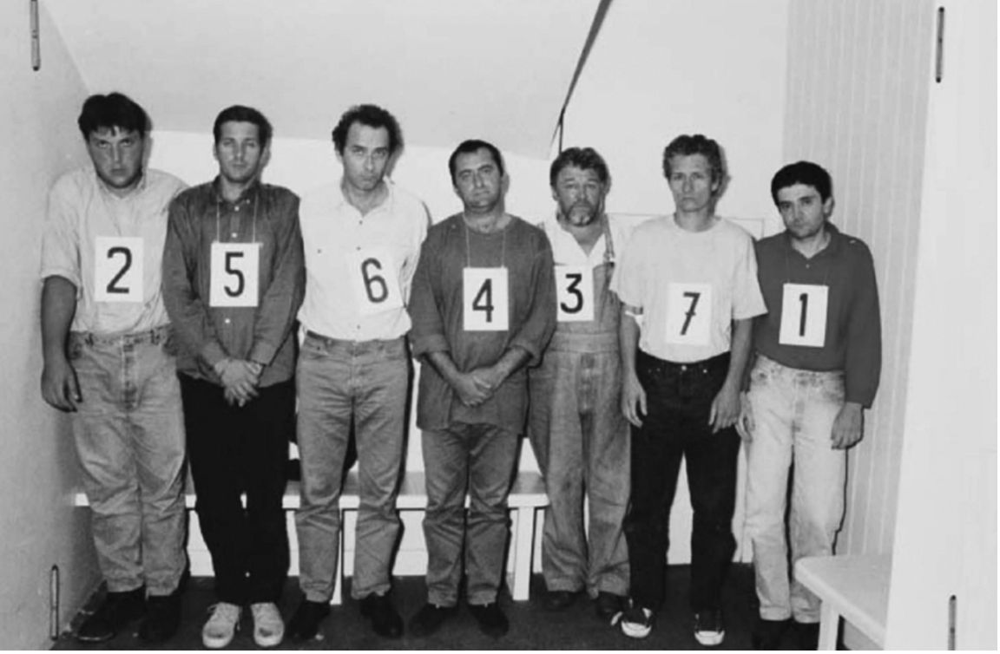

“隐私已死。忘掉它吧。”太阳微系统公司的首席执行官斯科特·麦克尼利这样说。他并不孤单；越来越多的悲观主义者和预言家已经宣告了隐私的消亡。然而，演奏隐私的安魂曲尚为时过早。入侵者已在城门口，但是城堡中的人不会不战而降。
重要的迹象
然而，对许多隐私倡导者来说，隐私仍然是有呼吸的生命体，只是需要紧急恢复。隐私国际、电子前沿基金会（EFF）、电子隐私信息中心（EPIC）和其他几个团体继续发起一场艰苦的战争，反对“老大哥”似乎势不可挡的征服。自2001年“9·11”事件以来，这场战争变得特别具有挑战性。
这方面的例子比比皆是。2009年初，英国政府宣布，为了保障2012年伦敦奥运会的安全，英国政府任命一家国防公司EADS开发一个名为DYVINE的系统，该系统让中央警察控制室可以远程接入伦敦的任何闭路电视网络，并将信息绘制在一张详细的3D地图上。这引起了人们对闭路电视二十四小时全面监控的担忧。该系统将包括车辆号牌识别摄像头，以及诸如在购物中心和停车场运作的私人网络。这将有助于在全市范围内追踪嫌疑犯。先进的计算机情报系统将帮助官员们过滤掉进入控制室的无关信息，只留下最相关的闭路电视信息，从而缩短了以往从一台摄像头到下一台摄像头所花的时间。
诸如此类的系统所引发的焦虑集中在第一章讨论过的各种形式（包括电子和其他形式）的监测和侵入对隐私构成的危险。但是，在第四章中讨论的追求耸人听闻的流言蜚语的过程中，媒体也在持续地进行着同样令人不安的攻击。这两方面的问题都值得在此做一番简短的总结。
记忆由比特（bits） [9] 构成
K.奥哈拉和N. 夏伯特，《咖啡机里的监控》，Oneworld，2008年，第230页。
技术与安宁
技术创新的步伐将继续加快。与此相伴的是，我们的私生活将受到新的、更加隐蔽的侵犯。但是，隐私作为一种民主价值观实在是太重要了，不经过斗争，就不可能被击败。确实，尤其是在面对真实的或感知到的威胁时，许多人为了换取安全或安全保障而不惜牺牲自己的隐私——即使有证据表明，例如，闭路电视摄像机的扩散在遏制犯罪方面只取得了有限的成功。
因此，对隐私的侵蚀往往产生于静止的聚积：通过冷漠、漠不关心或对包装成必不可少的或看似无害的措施的默认支持。我们不应该假装在我们的数字世界里，对侵犯隐私行为的监管是毫无问题的，事实远非如此。网上隐私必然会继续受到广泛的攻击。然而，网络空间容易受到一定程度的控制，不一定是法律控制，而是通过其基本构成，即网络空间的软件和硬件。莱斯格认为，这样的代码要么产生一个自由的处所，要么产生一个压迫性控制的处所。实际上，商业上的考量日益使网络空间显然更容易受到管制；网络空间已成为一种处所，在那里，行为受到的控制比现实空间更严格。最后，他坚持认为，这个问题由我们自己来决定，如何选择是如何架构的问题：应该由什么样的代码来管理网络空间，又由谁来控制代码。在这方面，代码是核心的法律问题。我们需要选择激活代码的价值观和原则。
我们反对掠夺的辩护，还需有制定并积极执行适当的法规和行为守则的政治意愿。现有的数据保护法需要不断修订和更新，如果没有这种法律，则应立即颁布。隐私办公室或信息事务专员需要足够的资金，以便有效监管立法和其他对隐私的威胁，并适当管理和提供咨询、信息。一个拥有适当资金、获得适当支持和称职的隐私专员可以作为我们个人数据的保卫者发挥不可或缺的作用。
软件和硬件制造商、服务供应商和计算机用户的合作，以及关于如何最好地保护个人信息的咨询和信息，是任何隐私保护策略的关键组成部分。
第一章中所描述的促进隐私保护技术对于打击侵犯隐私技术的重要性，再怎么强调也不过分。人类创造了科技。因此，科技既会侵害我们的隐私，也会改善我们的隐私保护状况。防火墙、反黑客机制和其他手段是第一道防线。例如，通过P3P（见第一章）表达个人的隐私偏好，是保护我们正在消失的隐私的另一个重要方式。它是如何工作的？例如，“隐私鸟”的隐私首选项设置面板允许你设定个人隐私偏好。当它遇到不符合你的隐私首选项的网站时，浏览器标题栏会显示一个红色的警告图标。有三种预先设定的设置：低级、中级和高级。当你选择一个设置时，在该设置下触发警告的特定项旁边将出现一个√的标记。低级设置仅在可能使用健康或医疗信息的网站上生成警告，或者帮助你拦截无法删除的营销消息或邮件。中级设置还包括一些额外的警告，当网站可共享你的个人识别信息，或者网站不允许你建立他们持有的关于你的数据时，也会触发警告。高级设置触发的警告数量最大，包括大多数商业网站。
促进这种首选项偏好设置的技术方法正在出现，与之同时出现的还有数据收集者可借此了解其责任的工具。
各类压力团体、非政府组织、说客和隐私倡导者在提高人们对隐私受到无情侵犯的意识方面发挥着至关重要的作用。
虽然数据库和网络在收集、储存、传输、监测、链接和匹配大量个人信息方面的超常能力，显然带来了相当大的风险，但技术同时也是我们的对手和盟友。
追逐狗仔队
飞短流长的欲望不太可能减弱。人们将继续通过未经授权披露个人信息的方式——线下和线上——来满足这种欲望。媒体以印刷品和数字形式、博客、社交网站和私人事实的其他在线传播者，无论是自愿的还是未经请求的，都对任何形式的监管或控制构成了难以应对的挑战。
狗仔队的力量几乎没有减弱的迹象。虽然它们的侵扰行为往往与其公布的成果混为一谈，但人们普遍承认一点，即法律在这两方面都有不足之处。
人们至少提出了四种可能的解决办法。第一个方法试图将侵犯隐私的记者和摄影师的行为入罪。例如，加利福尼亚州（其宪法明确保护隐私）颁布了一项《反狗仔队法》，对通过拍照、录像或记录某人从事“个人或家庭活动”，从而“现实的”和“建设性的”侵犯隐私的行为规定了侵权责任。

图18 这些摄影师在追逐戴安娜王妃的汽车（戴安娜王妃死于那辆车里）后被捕
第二条反击的路线试图劝诱或迫使媒体采取各种形式的自我管制。特别是在英国，为在这一点上达成妥协从而避免立法控制，做出了长期努力，但成效甚微。
第三种做法是按照美国侵权法的思路，对故意侵犯原告的隐居或独处权，或干涉其私人事务的行为立法。这种责任不同于公开披露因侵入而获得的信息可能引起的责任。
第四个创新策略是打击狗仔队的软肋——他们的钱袋子。通过拒绝承认他们对其图片享有版权，遏制他们窥探和发表的冲动——因为这些图片将不会归他们出售。因此，如果一家小报可以重新刊发一张由狗仔队秘密获取的流行明星的照片，而不必支付大量的费用，那么这些图片的市场就会大幅下跌。狗仔队就会被击倒。
在普通法域已经存在一种薄弱但相当少见的权威范围，它拒绝给予不道德的、欺骗性的、亵渎性的或诽谤性的材料以版权，但在今天，这种做法不大可能被援引。这一提议将扩大道德沦丧行为的范围，这些行为可能导致法院拒绝对其提供保护。但是这个想法是人为的、不切实际的，并且在概念上是有问题的。如果要将隐私纳入版权范畴，那么在大多数情况下，法律所要保护的与其说是隐私权，不如说是原告的公开权，即控制在何种情况下可以买卖自己的肖像的权利。这种对狗仔队问题适当处理的吸引力是可以理解的；事实上，财产利益在隐私权的法律观念诞生时就已经存在了。如第三章所述，承认普通法保护隐私的美国第一项判决就涉及侵犯姓名或肖像权：被告为商业利益而使用——通常是为了广告目的而使用原告的身份。
但隐私本身就应该受到保护；偷偷摸摸的补救办法最终会适得其反。如何保护隐私？理想的答案是明确的、认真起草的立法，规定对严重冒犯、蓄意或鲁莽地侵犯个人的独处或隐居，以及未经授权公布个人信息的行为实施民事和刑事制裁。当然，正如在第四章中所讨论的那样，隐私总是要与言论自由相平衡。
无论是在工作中还是在家里，我们都无权认定我们的网上应用程序是安全的。我们必须同时依靠技术和法律所提供的庇护。人们常说，技术既会引起弊病，也会产生一部分解决方法。虽然法律很少能成为对付蓄意侵入者的有力武器，但保护性软件的进步、《欧洲联盟指令》所采用的公平信息做法，以及若干法域的法律，为个人数据的收集、使用和转让提供了合理和健全的规范性框架。它对个人信息的实际使用情况、收集方式，以及个人的合法期望进行了务实的分析。这些问题将在我们不确定的将来中长期主导有关隐私的讨论。我们如何处理这些问题，可能会决定我们以后能否过上秘密的生活。